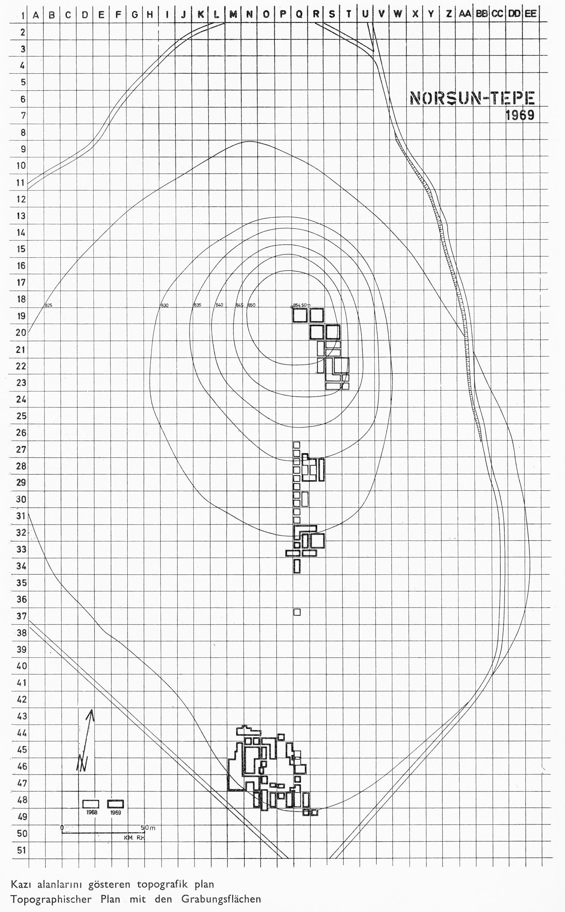

Math teachers.
They are clearly sadists. Whomever wrote the curriculum for this class. Rene
Descarte; and the stupid fly on his wall. I blame nobody. Or everybody. Definitely
everybody.
This section introduces the origin an application of graphing.
As the (possibly apocryphal) story goes, Rene Descarte, a famous seventeenth century philosopher
and mathematician, was sitting in bed one day with a cold and watching a fly crawling across his ceiling. He started trying to figure out how he’d describe the fly’s path to a friend later when he realized that it would be easiest to just record the fly’s distance from two adjacent walls of his room at each time of interest. By saying the fly was ‘3 inches from the south wall and 4 inches from the east wall’ one could precisely state the location of that fly at that moment, even if the fly was no longer present. Thus he came up with the idea of the coordinate axis system, the ‘x-y plane’. We even named this plane after him; the so-called “Cartesian Plane”.Graphing on the Cartesian plane has two (very) distinct uses. We will introduce the most commonly used form (outside of academics) of Cartesian graphing here, but for the rest of this class (and calculus one) we will only utilize the second usage, which we cover in the next tile on how to graph to relate variables.
The first way that Cartesian graphing is commonly used is as a coordinate system to allow one to be precise about the location of something that is found within a larger context. A great example of this is when archaeological dig sites are documented. A (properly) documented archaeology site will superimpose a grid over the entire site, where one axis will be assigned numbers and the other axis will be assigned letters. Thus you might have a grid where the East/West direction is labeled with “A” at end and assigning a letter to each block across the axis. Similarly the North/South most section could be labeled with a “1” at one end, and labeling with progressively larger numbers along the axis for each subsequent block. You would end up with something like Figure gridMap
